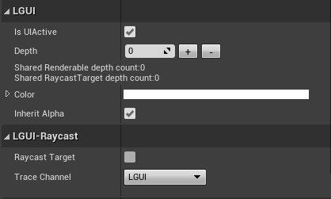

UIItem
UIContainer is a actor wrapper of UIItem.
1. Transform related properties
| Property: | Functions: |
|---|---|
| Anchors | The anchor points for the lower left corner and the upper right corner of the rectangle. |
| Anchor Offset X/Y | X/Y position of the rectangle's pivot point relative to the anchors. The pivot point is the location around which the rectangle rotates. Not visible if anchor set to stretch or none. |
| Width/Height | Size of the rectangle. Not visible if anchor set to stretch. |
| Stretch Left/Right/Top/Bottom | Positions of the rectangle's edges relative to their anchors. This can be thought of as padding inside the rectangle defined by the anchors. Visible when anchor set to stretch. |
| Pivot | Location of the pivot point around which the rectangle rotates, defined as a fraction of the size of the rectangle itself. 0,0 corresponds to the lower left corner while 1,1 corresponds to the upper right corner. |
| Location | SceneComponent's location. X/Y is controlled by LGUI if anchor is not none. |
| Rotation, Scale | SceneComponents's rotation and scale. |
| Hierarchy Index | Mostly used for layout to sort. |
2. Other properties

| Property: | Functions: |
|---|---|
| Is UI Active | Active ui is visible and interactable. If parent or parent's parent... IsUIActive is false, then this ui is not visible and not interactable. |
| Depth | Higher depth render on top of lower one, and receive raycast before lower one. |
| Color | Render color of UI element. Color may be override by UISelectable(UIButton, UIToggle, UISlider ...), if UISelectable's transition set to "Color Tint". |
| Inherit Alpha | Alpha inherit from parent. |
| Raycast Target | Raycast Target can receive raycast, means it is ready for interaction. See Create Button. |
| Trace Channel | Trace channel for line trace of interaction. See Create Button. |
| Raycast Complex | Visible if it is a UIRenderable object. Default raycast use rectangle area for raycast, but Raycast Complex use actural mesh for raycast. |